Finding the staff lines position in the Salzinnes Antiphonal
Posted by gvigliensoni on November 10, 2011
working in the creation of fully-searchable manuscripts and music documents. For extracting the pitches from within these documents we need to extract the position of the glyphs in the page as well as the position of the staff. The only staff finder algorithm that considers non-parallel staff lines is the Miyao algorithm. Although it works very good in most cases, with our last manuscript, the Salzinnes Antiphonal, I have had some problems with this algorithm.
The following image shows the staff lines being recognized by the Miyao processing. It can be seen that the algorithm does a good work in the recognized points, i.e., the points and staff lines are properly localized, but there are big portions of the staff lines that are not recognized at all. On top of that, there are overlapped zones of staffs, like in the second staff where the green and light blue zones coincide. Taking a closer look, it can be seen that there are redundant red points in the first and sixth columns. Interestingly, it can also be seen that the staff lines of the ninth and tenth staff go beyond the actual boundary of the staff due to the presence of black pixels that were generated in the pre-processing of the page.
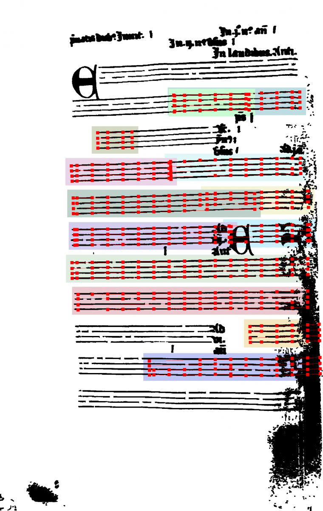
I have been working in tracing why the Miyao stafffinder algorithm is not properly working in this manuscript, so I have been printing intermediate steps of the script. These are some of its intermediate steps:
- Candidate points at equidistant segments are selected among the points in the page with black pixels. The script does a good job finding all black pixel points, but discarding some bad candidate points, like the ones that create the letters at the top of the page. Interestingly, the algorithm gets confused with the black zone at the bottom right part of the page and selects some points which are clearly bad candidates and loosing another ones.
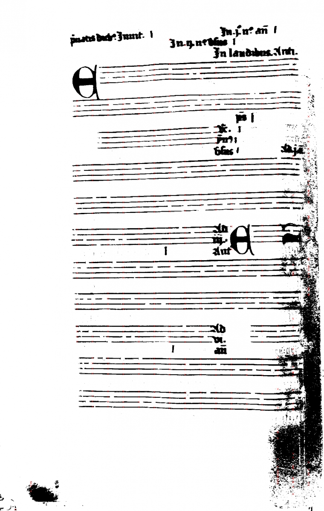
- Composition of stave groups. It can be seen that vertical lines are only generated in staff with exactly only four points, while in places with more or less, the blue line is not generated.
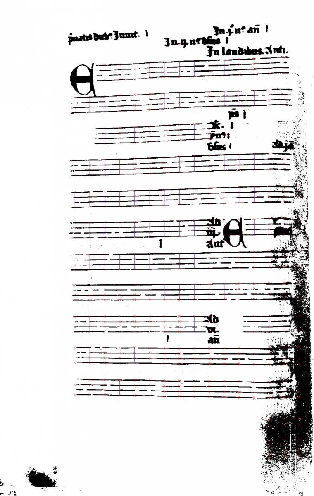
- Labeling of points and finding the zones for sets of staff lines. There are no discarded points, but the some of them are still doubled (using different colors). Maybe the algorithm thinks they belong to different zones.
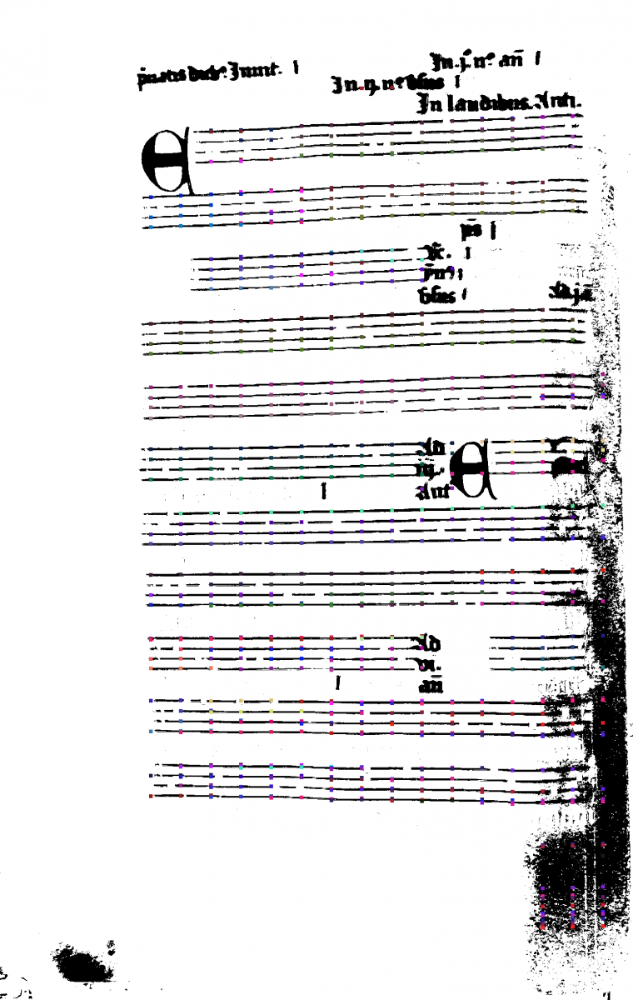
- Some points are discarded due to some process that it is still unclear for me
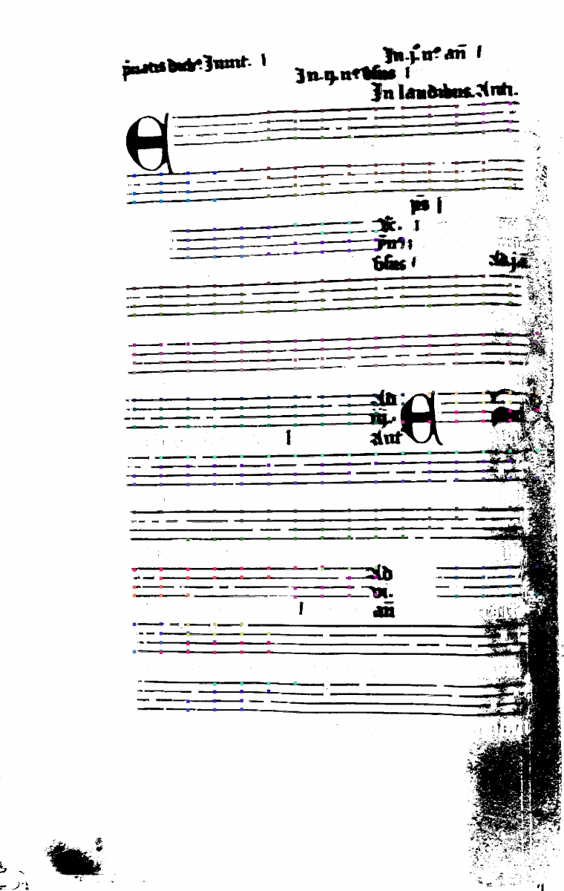
- And finally, the image with several missing points. It is interesting to note that the points of the previous image and these new ones are not the same.
Finally, I would like to try another approach starting from the candidate points generated by the Miyao Algorithm and the structure it uses for storing the position of all points. My first impression would be to use this structure and create horizontal vectors. Then, use logistic regression to verify if the points in a vector belong to one or two lines (classification problem), and then apply linear regression to find a fitting function between the non-discarded points for each vector.
One caveat for this approach would be how to treat all candidate points generated in the black zone of the page during the pre-processing.
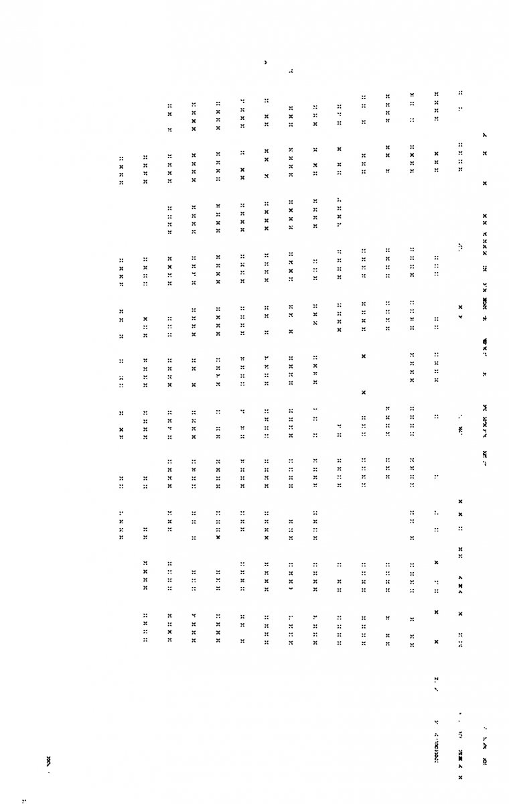
With the changes in the script for restoring missed points per each vertical line, now the current output of the candidate points looks a bit better:
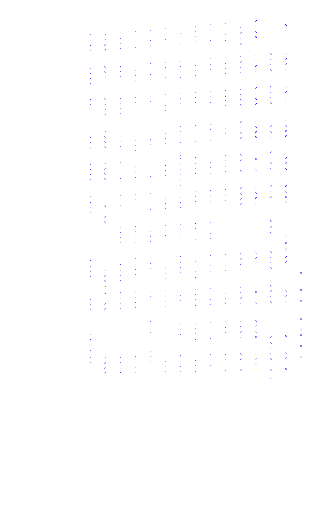
And processing the candidate points for ‘despeckling’ those candidate points which are close together:
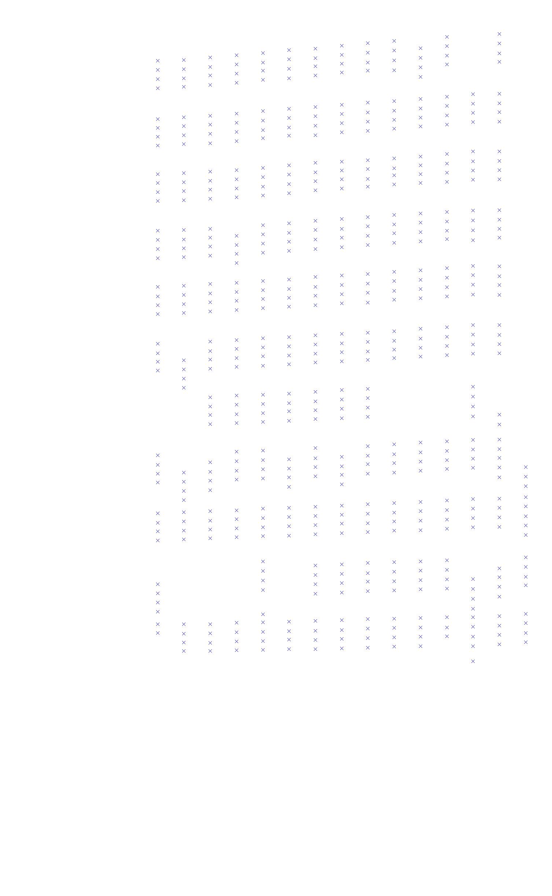
And testing the same image with more in-between points
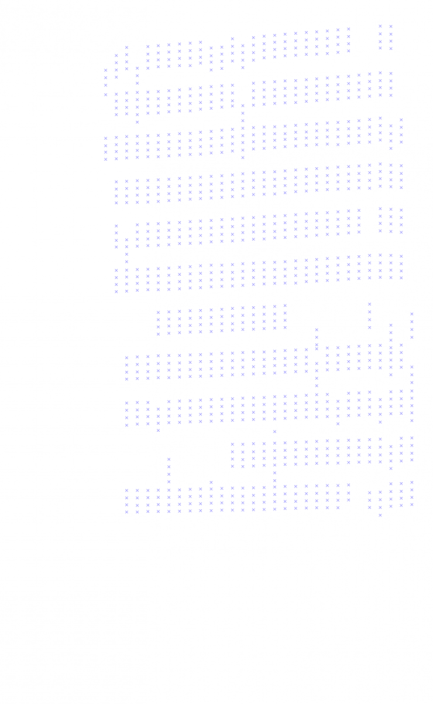
During the last days I have been doing work in filling the points that are plotted in each page. The following images show the ‘before and after’ of the procedure that I am investigating, which takes does not consider the next point if the y-difference between the two points is bigger than the staff-space. In such case, the system looks for the next point and does another comparison, and so on.
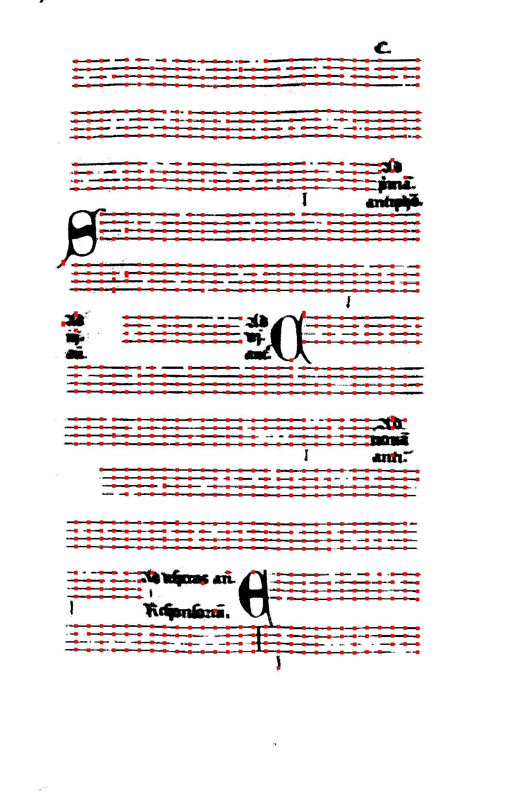
The last week I’ve been investiganting the use of linear regression for finding the points which were not recognised as candidate points by the Miyao algorithm. The next imege shows the points that my implementation finds on two staves of page 1-003r (if the animation does not work, please click this link
{kind=link}
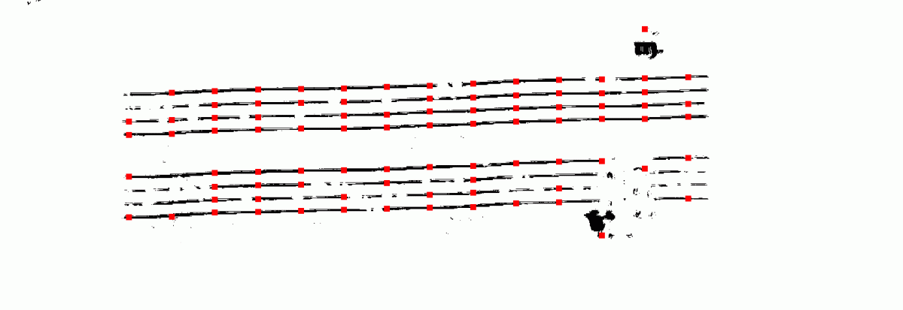
However it finds most of the missed points, there are some problems when too many points of a staff line are not present, so the linear regression function is miscalculated and this approach starts to find points which are not part of the actual staffline, as in the next example
{kind=link}
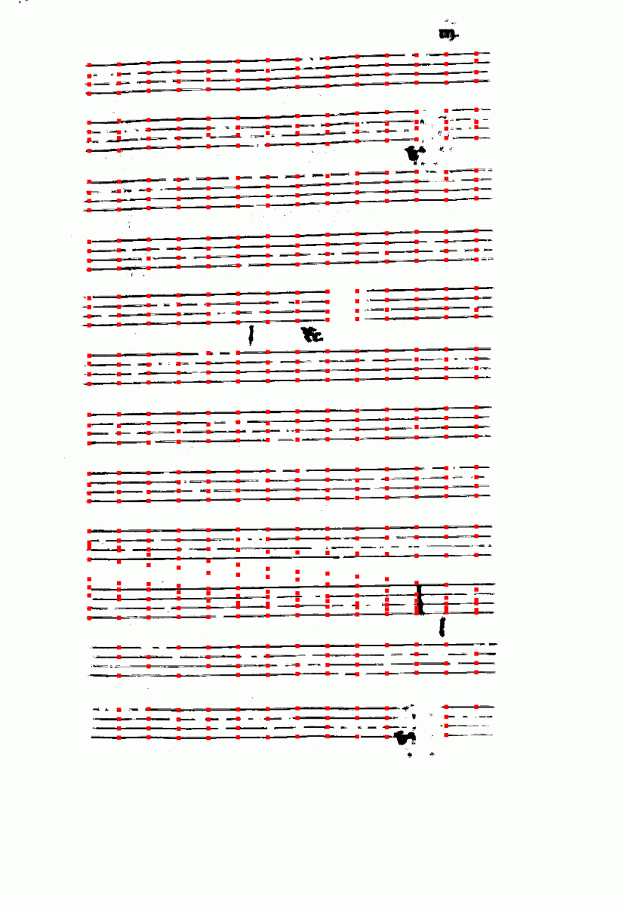
Another example shows that most points are recognised, but some of them are not properly placed:
{kind=link}
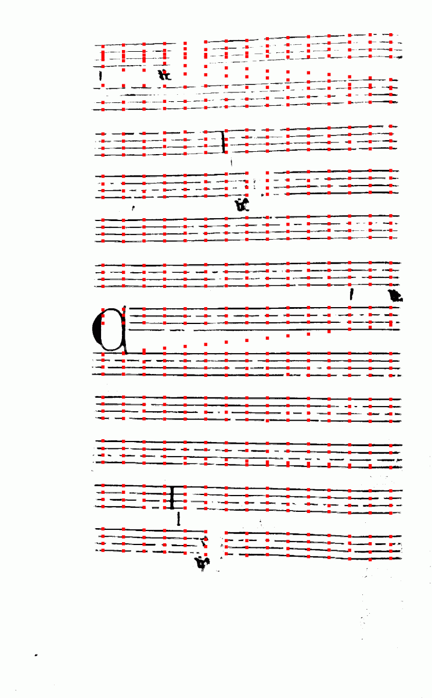
It also should be noticed that this linear regression approach will have some problems in pages with half staves because it will consider the points of the next line to find the fitness function, so a way for considering only one staff at a time must be implemented. An example of the explained problem would be this:
{kind=link}
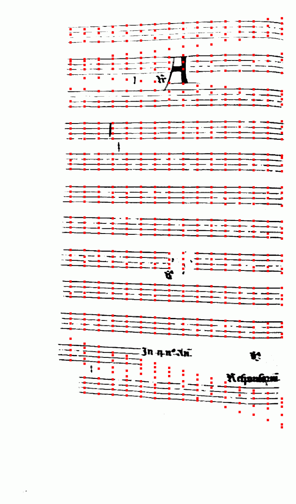